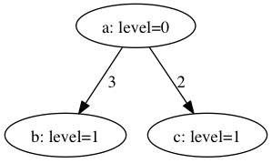

How can I draw a graph with Graphviz and annotate its nodes and edges?
For example:
(a: level=0) --3--> (b: level=1)
(a: level=0) --2--> (c: level=1)
|
How can I draw a graph with Graphviz and annotate its nodes and edges? For example: |
||||
|
|
|
It is quite simple, here's a which with  There are way more parameters you can set to get the layout that you want. I suggest you look through the Graphviz documentation. |
|||
|
|